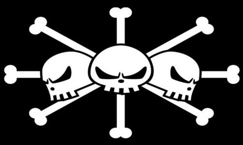
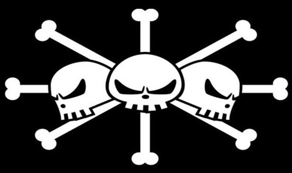

The Blackbeard Pirates are an extremely infamous and powerful pirate fleet led by their admiral, Marshall D. Teach, better known as "Blackbeard", one of the Four Emperors.
Blackbeard was originally a member of the Whitebeard Pirates (and Portgas D. Ace's subordinate), until he murdered one of his crewmates over a Devil Fruit and defected, heading out to form his own crew. Blackbeard was Crocodile's replacement among the Seven Warlords of the Sea, having captured the wanted pirate Ace to obtain his position, but resigned after forfeiting the privilege by raiding Impel Down and recruiting several notorious prisoners for his crew from Level 6.
During the timeskip, after clashing with the remnants of the Whitebeard Pirates led by Marco the Phoenix and emerging victorious, Blackbeard usurped the status of the deceased Whitebeard as one of the Four Emperors. Following the Rocky Port Incident, the Blackbeard Pirates made Hachinosu their main base.
Due to their actions and role, they are served as the unseen overarching antagonists in the Drum Island Arc, minor antagonists in the Jaya Arc, tertiary antagonists in the Impel Down Arc, and one of the main antagonist groups in the Marineford Arc and Summit War Saga as a whole, and one of the major antagonist groups in the Final Saga and one of the overall antagonist groups for the remainder of the series.